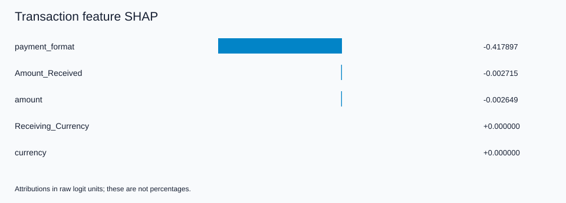
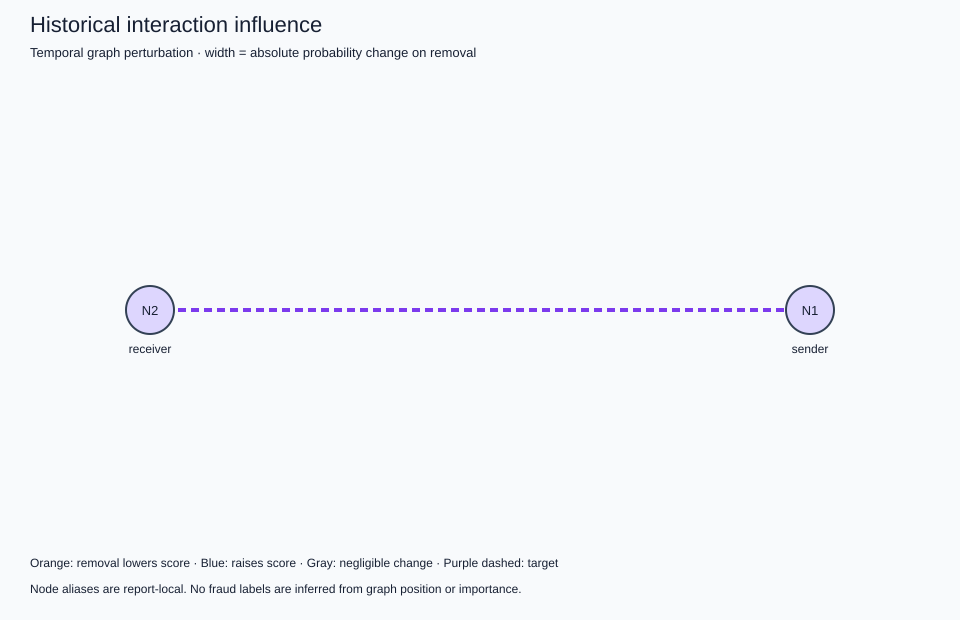

Payment format
Cheque
Decreased the fraud scoreLEGITIMATE
Cheque
Decreased the fraud score20.92 USD
Decreased the fraud score20.92 USD
Decreased the fraud scoreCompared with reference transactions, with account history held fixed.
No relevant historical activity was found in the configured temporal window.
No relevant historical graph interactions were found in the configured neighborhood/window.
The model score did not meet the alert threshold. The transaction details shown above influenced the score downward relative to the reference transactions. No historical interaction exceeded the display tolerance within the examined neighborhood/window.
This explanation describes model behavior and does not establish that the transaction is actually fraudulent.
TECHNICAL XAI DETAILS
Transaction: 3802308
Bank: Citi
MODEL PREDICTION
Fraud model score (uncalibrated): 0.013470429
Prediction: LEGITIMATE
Decision threshold: 0.309304938
PREDICTION PARITY
Existing evaluation score: 0.013470430
XAI score: 0.013470429
Absolute difference: 5.42902731e-10
FEATURE ATTRIBUTION
Method: exact_empirical_interventional_shap
Units: raw_logit; account memory held fixed.
- payment_format = Cheque: -0.417897197 (decreased)
- Amount_Received = 20.92: -0.002714584 (decreased)
- amount = 20.92: -0.002649347 (decreased)
TEMPORAL EVIDENCE
Window: 8 completed batches
Relevant endpoint events: 0
Volume by currency: {}
Time since sender last seen: 1039117.5 seconds
Time since receiver last seen: 1039117.5 seconds
The current decoder does not directly use time deltas. Earlier deltas enter recurrent memory updates. A zero last_seen sentinel is reported as unknown.
TOP HISTORICAL INTERACTIONS
No historical candidate events in the configured neighborhood/window.
Showing 0 of 0 evaluated interactions.
GRAPH EVIDENCE
Evaluated historical edges: 0
Nodes represented: 2
Method: temporal graph perturbation
Retained events for fidelity: 0
Only selected updates retained inside bounded window; pre-window account memory remains intact.
FIDELITY
Graph fidelity: not applicable (no historical candidates).
Top feature ablation absolute score change: 0.00706563238
Low feature ablation absolute score change: 8.15320034e-17
Random feature ablation absolute score change: 3.42780946e-05
STABILITY
Background-resampling top-feature Jaccard: 1.0
Background runs: 3; top-k: 3
LIMITATIONS
- Model explanations do not establish fraud or causality; scores are uncalibrated.
- Feature SHAP holds account memory fixed; static node-feature attribution is not implemented.
- Temporal graph perturbation is a bounded replay intervention, not GNNExplainer. Earlier anchor memory remains intact.
- Interventional SHAP hybrids can be unrealistic for correlated fields; exactness is relative to the sampled background.
- Legacy preprocessing reproduces current original evaluation and saved metrics; original fitted objects were not preserved.
- The original fixed-size batching and timestamp-tie behavior are preserved.
- No combined federated-continual checkpoint or formal differential privacy is implemented.


All calculated features, interactions, evaluation results, limitations and provenance are preserved in the full engine output.